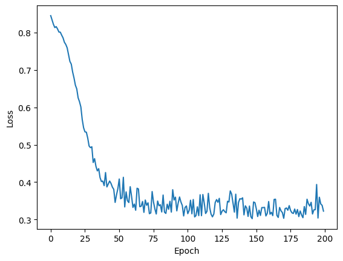

Pacotes Utilizados#
import torch
import matplotlib.pyplot as plt
from sklearn.datasets import make_moons
from sklearn.metrics import classification_report
from torch.utils.data import DataLoader, TensorDataset
Dispositivo#
device = 'cuda' if torch.cuda.is_available() else 'cpu'
print(f'Dispositivo atual: {device}')
Dispositivo atual: cpu
Variáveis#
# Criando variáveis simples no PyTorch como tensores
a = torch.tensor(5) # Um tensor escalar
b = torch.tensor([1.0, 2.0, 3.0]) # Um tensor de 1D (vetor)
print(f"Variável escalar: {a}")
print(f"Variável vetor: {b}")
Variável escalar: 5
Variável vetor: tensor([1., 2., 3.])
# Também é possível criar variáveis com dimensões mais altas
c = torch.tensor([[1, 2], [3, 4]]) # Um tensor 2D (matriz)
print(f"Variável matriz: \n{c}")
Variável matriz:
tensor([[1, 2],
[3, 4]])
# Podemos criar tensores com tipos específicos
d = torch.tensor([1.0, 2.0, 3.0], dtype=torch.float32) # Um tensor com precisão em ponto flutuante
print(f"Variável de ponto flutuante: {d}")
Variável de ponto flutuante: tensor([1., 2., 3.])
Operações#
# Operações básicas com tensores
x = torch.tensor([2.0, 3.0, 4.0])
y = torch.tensor([1.0, 5.0, 7.0])
# Soma
soma = x + y
print(f"Soma: {soma}")
# Subtração
subtracao = x - y
print(f"Subtração: {subtracao}")
Soma: tensor([ 3., 8., 11.])
Subtração: tensor([ 1., -2., -3.])
# Multiplicação
multiplicacao = x * y
print(f"Multiplicação: {multiplicacao}")
# Divisão
divisao = x / y
print(f"Divisão: {divisao}")
Multiplicação: tensor([ 2., 15., 28.])
Divisão: tensor([2.0000, 0.6000, 0.5714])
# Produto escalar
produto_escalar = torch.dot(x, y)
print(f"Produto escalar: {produto_escalar}")
Produto escalar: 45.0
# Funções matemáticas
exp = torch.exp(x) # Exponencial
print(f"Exponencial: {exp}")
Exponencial: tensor([ 7.3891, 20.0855, 54.5981])
# Criando matrizes (tensores 2D)
A = torch.tensor([[1.0, 2.0], [3.0, 4.0]]) # Matriz 2x2
B = torch.tensor([[5.0, 6.0], [7.0, 8.0]]) # Outra Matriz 2x2
# Multiplicação elemento a elemento (Hadamard product)
elementwise_mult = A * B
print(f"Multiplicação elemento a elemento: \n{elementwise_mult}")
Multiplicação elemento a elemento:
tensor([[ 5., 12.],
[21., 32.]])
# Multiplicação de matrizes (produto de matrizes)
matrix_mult = torch.matmul(A, B)
print(f"Multiplicação de matrizes: \n{matrix_mult}")
Multiplicação de matrizes:
tensor([[19., 22.],
[43., 50.]])
# Transposição de matriz
A_transpose = torch.transpose(A, 0, 1)
print(f"Transposta da matriz A: \n{A_transpose}")
Transposta da matriz A:
tensor([[1., 3.],
[2., 4.]])
# Inversão de uma matriz (usando tensores quadrados invertíveis)
A_inv = torch.inverse(A)
print(f"Inversa da matriz A: \n{A_inv}")
Inversa da matriz A:
tensor([[-2.0000, 1.0000],
[ 1.5000, -0.5000]])
# Produto de uma matriz com sua transposta
A_mult_transpose = torch.matmul(A, A_transpose)
print(f"Produto de A com sua transposta: \n{A_mult_transpose}")
Produto de A com sua transposta:
tensor([[ 5., 11.],
[11., 25.]])
Redes Neurais#
Representação#
class MLP(torch.nn.Module):
def __init__(self, input_size, hidden_size):
super(MLP, self).__init__()
self.hidden_layer = torch.nn.Linear(input_size, hidden_size)
self.output_layer = torch.nn.Linear(hidden_size, 1)
def forward(self, x):
x = torch.nn.functional.sigmoid(self.hidden_layer(x))
return torch.nn.functional.sigmoid(self.output_layer(x))
model = MLP(2, 3)
model(torch.Tensor([[0, 0]]))
tensor([[0.4265]], grad_fn=<SigmoidBackward0>)
Loss e Otimizador#
criterion = torch.nn.BCELoss()
optimizer = torch.optim.Adam(model.parameters(), lr=0.01)
Dataset#
X, y = make_moons(n_samples=200, noise=0.1, random_state=42)
X = torch.tensor(X, dtype=torch.float32)
y = torch.tensor(y, dtype=torch.float32).unsqueeze(1)
dataset = TensorDataset(X, y)
dataloader = DataLoader(dataset, batch_size=32, shuffle=True)
Treinamento#
num_epochs = 200
loss_logs = []
for epoch in range(num_epochs):
# Start epoch loss
running_loss = 0.0
for b, (X_batch, y_batch) in enumerate(dataloader):
# Forward pass
outputs = model(X_batch)
loss = criterion(outputs, y_batch)
# Backward pass and optimization
optimizer.zero_grad()
loss.backward()
optimizer.step()
# Update running loss
running_loss += loss.item()
# Update epoch loss
loss_logs.append(running_loss/b)
# Plot loss
plt.plot(loss_logs)
plt.ylabel('Loss')
plt.xlabel('Epoch')
plt.show()

Avaliação#
with torch.no_grad():
outputs = model(X)
print(
classification_report(
y.detach().numpy(),
outputs.detach().numpy() > 0.5
)
)
precision recall f1-score support
0.0 0.84 0.86 0.85 100
1.0 0.86 0.84 0.85 100
accuracy 0.85 200
macro avg 0.85 0.85 0.85 200
weighted avg 0.85 0.85 0.85 200